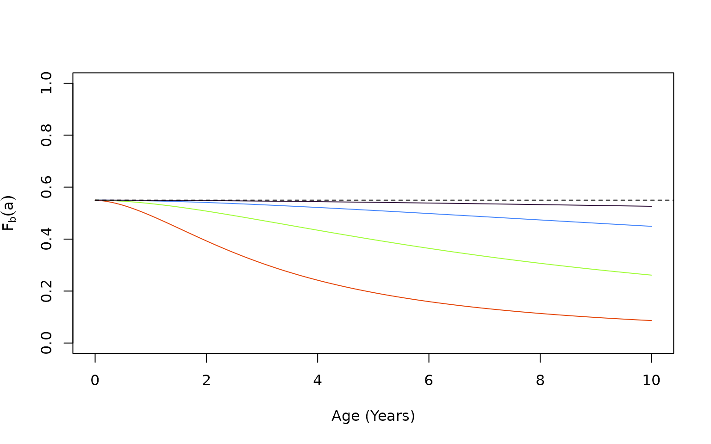
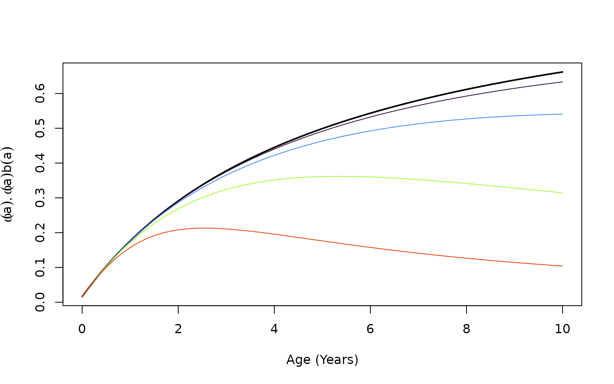
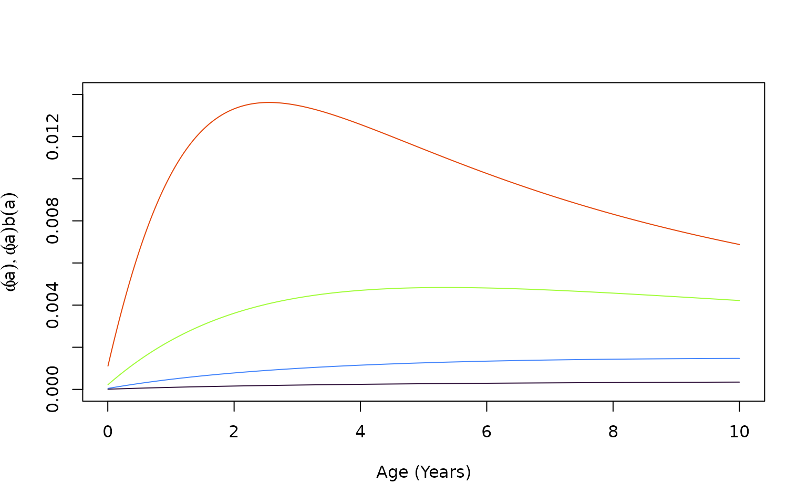
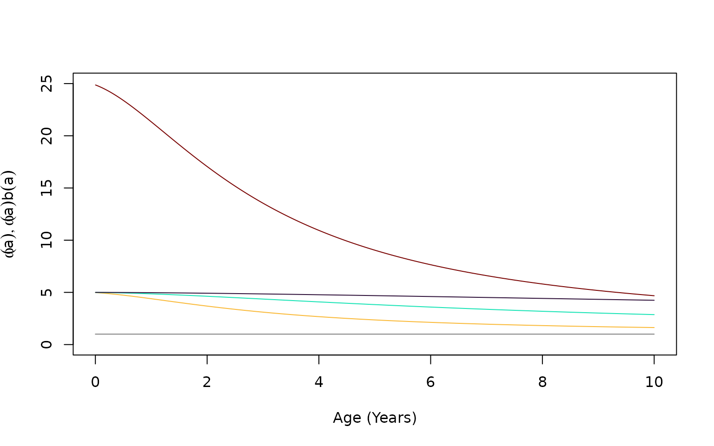
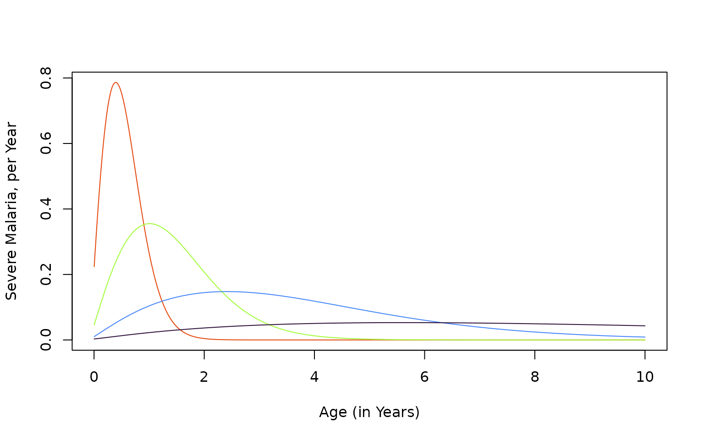
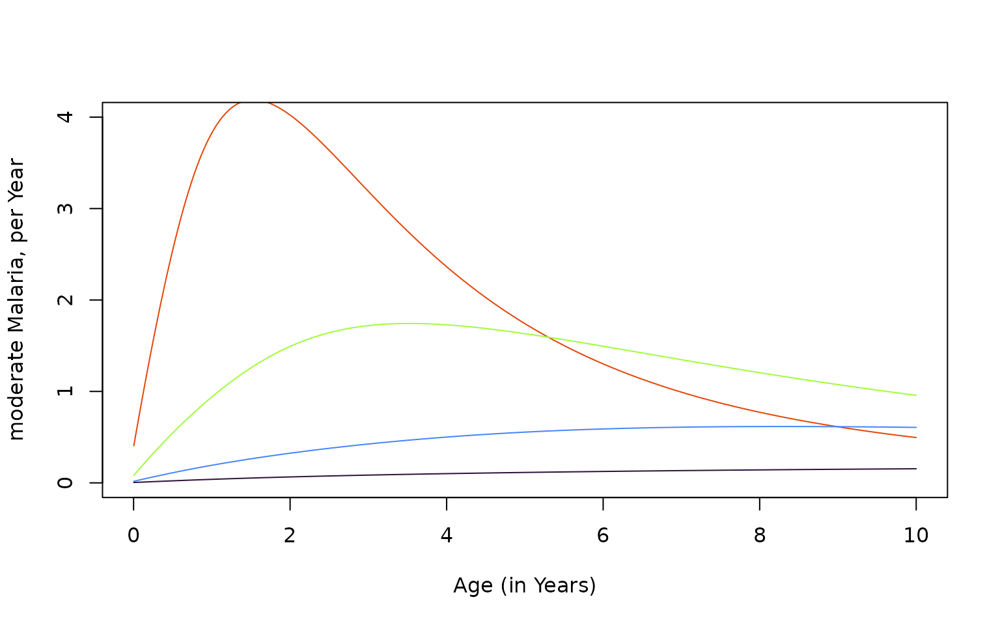
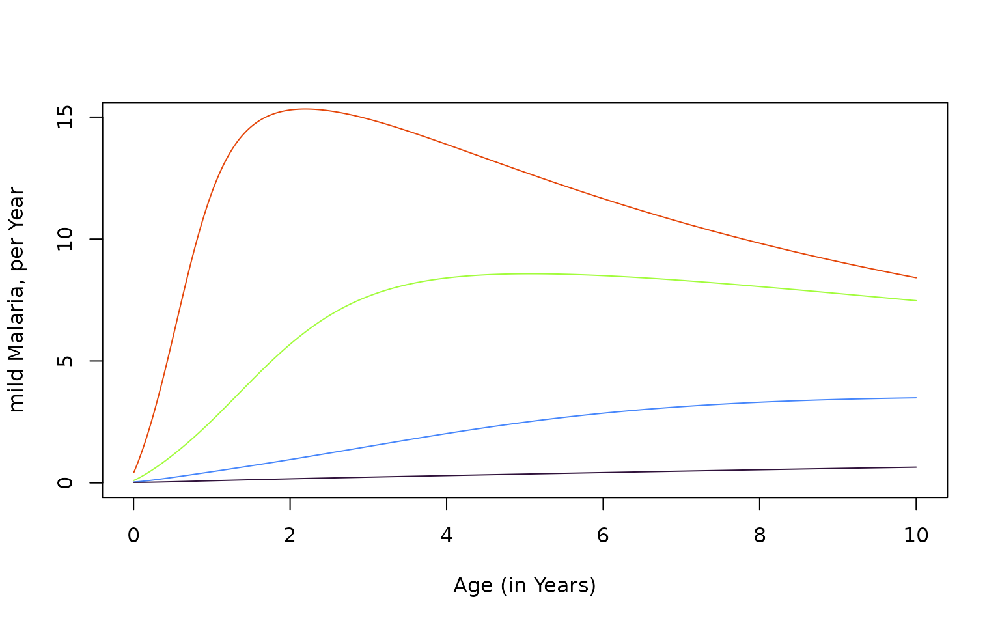
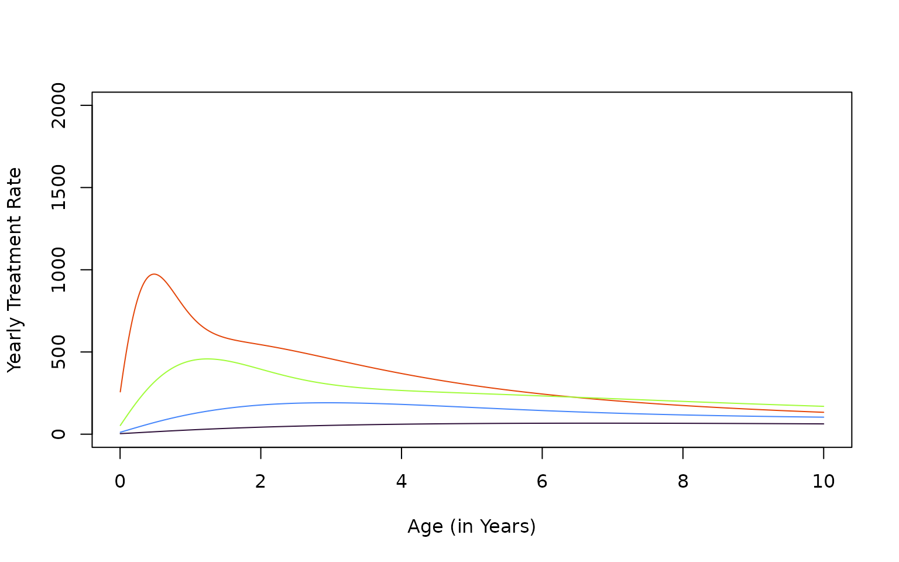

vignettes/human_SIPmav3.Rmd
human_SIPmav3.Rmd
library(ramp.xds)
library(viridisLite)
library(ramp.library)
library(deSolve)
#devtools::load_all()
mod$EIRpar$eir = .2/365
mod0 <- xds_solve_cohort(mod, A=10, da=1)
XH0 <- get_XH(mod0)
mod$EIRpar$eir = 1/365
mod1 <- xds_solve_cohort(mod, A=10, da=1)
XH1 <- get_XH(mod1)
mod$EIRpar$eir = 5/365
mod5 <- xds_solve_cohort(mod, A=10, da=1)
XH5 <- get_XH(mod5)
mod$EIRpar$eir = 25/365
mod25 <- xds_solve_cohort(mod, A=10, da=1)
XH25 <- get_XH(mod25)xds_setup_cohort(..., age_par = make_function(makepar_F_type2()))
To model biting by age, we use a simple function:
omega = make_function(makepar_F_type2())
aa = seq(0, 7300, by=10)
plot(aa/365, omega(aa), type = "l", ylim = c(0, 1.5), xlab = "Age (Years)", ylab = expression(omega(a)))
segments(0,1, 20, 1, lty =2)We let
At three levels of exposure, this is what looks like:
clrs <- turbo(7)
age <- XH1$time
b_a_0 = with(mod$Xpar[[1]]$b_mod, F_infect_im(XH0$vh, b0, Nb))
b_a_1 = with(mod$Xpar[[1]]$b_mod, F_infect_im(XH1$vh, b0, Nb))
b_a_3 = with(mod$Xpar[[1]]$b_mod, F_infect_im(XH5$vh, b0, Nb))
b_a_10 = with(mod$Xpar[[1]]$b_mod, F_infect_im(XH25$vh, b0, Nb))
plot(age/365, b_a_1, type="l", xlab = "Age (Years)", ylab = expression(F[b](a)), ylim = c(0,1), col = clrs[2])
lines(age/365, b_a_3, col = clrs[4])
lines(age/365, b_a_10, col = clrs[6])
lines(age/365, b_a_0, col = clrs[1])
segments(0, 0.55, 20, 0.55, lty =2)
At three levels of exposure, we plot :
w_a <- omega(age)
plot(age/365, 0.55*w_a, type="l", xlab = "Age (Years)", ylab=expression(list(omega(a), omega(a)*b(a))), lwd=2)
lines(age/365, b_a_0*w_a, col = clrs[1])
lines(age/365, b_a_1*w_a, col = clrs[2])
lines(age/365, b_a_3*w_a, col = clrs[4])
lines(age/365, b_a_10*w_a, col = clrs[6])
We set up a negative binomial model, with a size parameter
mod <- setup_exposure_nb(mod, .1)Since the model outputs cumulative exposure, we can diff it to get the realized FoI. The daily FoI with respect to age looks like this:
a1 = age[-1]
foi0 <- diff(XH0$vh)
foi1 <- diff(XH1$vh)
foi5 <- diff(XH5$vh)
foi25 <- diff(XH25$vh)
plot(a1/365, foi25, type="l", xlab = "Age (Years)", ylab=expression(list(omega(a), omega(a)*b(a))), col = clrs[6], ylim = c(0, 0.014))
lines(a1/365, foi1, col = clrs[2])
lines(a1/365, foi5, col = clrs[4])
lines(a1/365, foi0, col = clrs[1])
Obviously, the effect of immunity is to homogenize exposure: We plot the three ratios:
plot(a1/365, foi25/foi1, type="l", xlab = "Age (Years)", ylab=expression(list(omega(a), omega(a)*b(a))), col = clrs[7], ylim = c(0,25))
lines(a1/365, foi25/foi5, type="l", col = clrs[5])
lines(a1/365, foi5/foi1, type="l", col = clrs[3])
lines(a1/365, foi1/foi0, type="l", col = clrs[1])
segments(0,1,10,1, col = grey(0.5))
#segments(0,3,10,3, col = grey(0.5))
#segments(0,2,10,2, col = grey(0.5))
severe0 = diff(XH0$severe)
severe1 = diff(XH1$severe)
severe5 = diff(XH5$severe)
severe25 = diff(XH25$severe)
plot(XH1$time[-1]/365, severe25*365, type = "l", col = clrs[6], ylab = "Severe Malaria, per Year", xlab = "Age (in Years)")
lines(XH1$time[-1]/365, severe5*365, col = clrs[4])
lines(XH1$time[-1]/365, severe1*365, col = clrs[2])
lines(XH0$time[-1]/365, severe0*365, col = clrs[1]) 
plot(XH1$time[-1]/365, diff(XH25$moderate)*365, type = "l", col = clrs[6], ylab = "moderate Malaria, per Year", xlab = "Age (in Years)", ylim = c(0,4))
lines(XH1$time[-1]/365, diff(XH5$moderate)*365, col = clrs[4])
lines(XH1$time[-1]/365, diff(XH1$moderate)*365, col = clrs[2])
lines(XH1$time[-1]/365, diff(XH0$moderate)*365, col = clrs[1]) 
plot(XH1$time[-1]/365, diff(XH25$mild)*365, type = "l", col = clrs[6], ylab = "mild Malaria, per Year", xlab = "Age (in Years)", ylim = c(0,15))
lines(XH1$time[-1]/365, diff(XH5$mild)*365, col = clrs[4])
lines(XH1$time[-1]/365, diff(XH1$mild)*365, col = clrs[2])
lines(XH1$time[-1]/365, diff(XH0$mild)*365, col = clrs[1]) 
plot(XH1$time[-1]/365, diff(XH25$treat)*365, type = "l", col = clrs[6], ylab = "Yearly Treatment Rate", xlab = "Age (in Years)", ylim = c(0, 2000))
lines(XH1$time[-1]/365, diff(XH5$treat)*365, col = clrs[4])
lines(XH1$time[-1]/365, diff(XH1$treat)*365, col = clrs[2])
lines(XH1$time[-1]/365, diff(XH0$treat)*365, col = clrs[1]) 